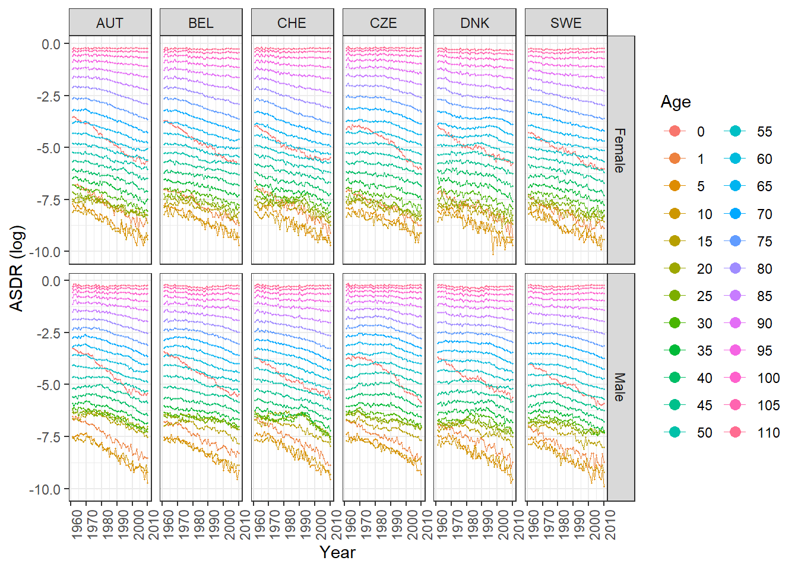
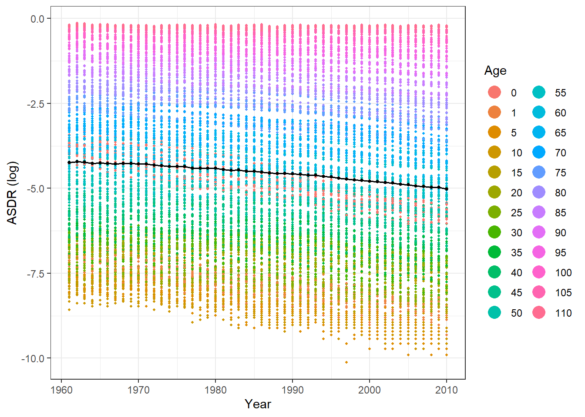
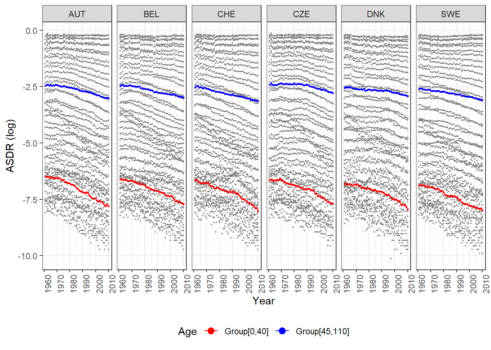
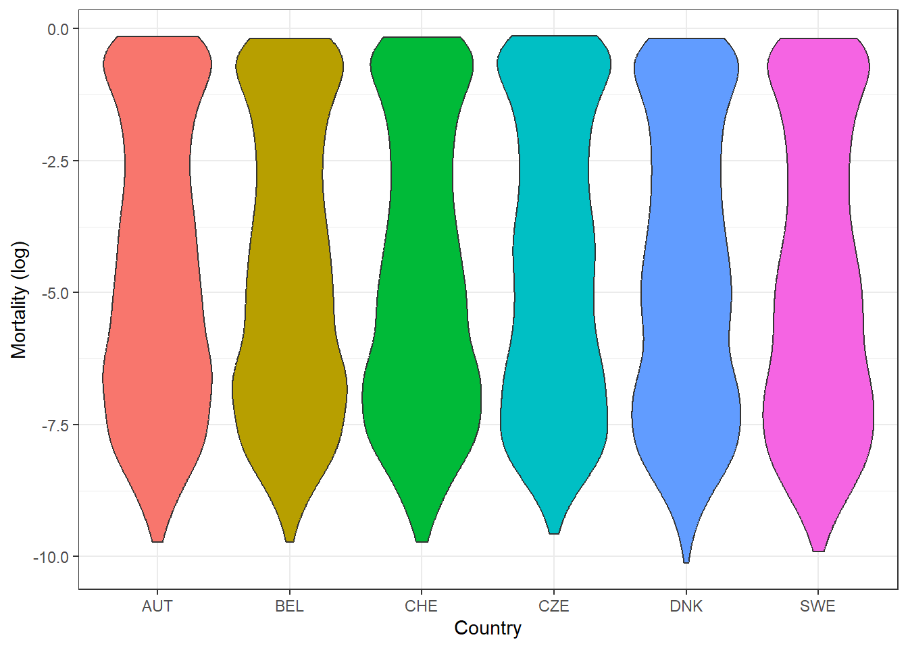
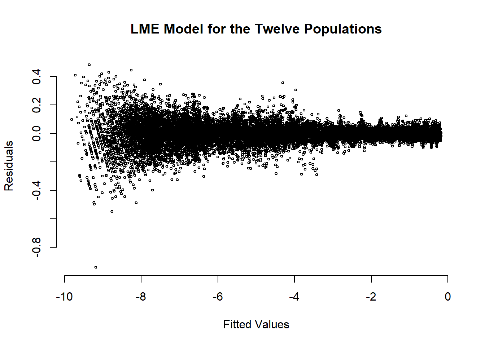
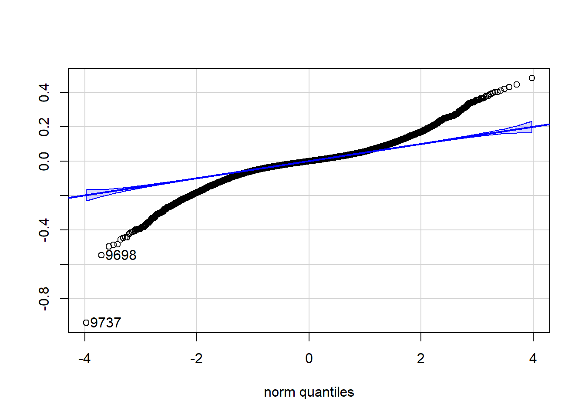
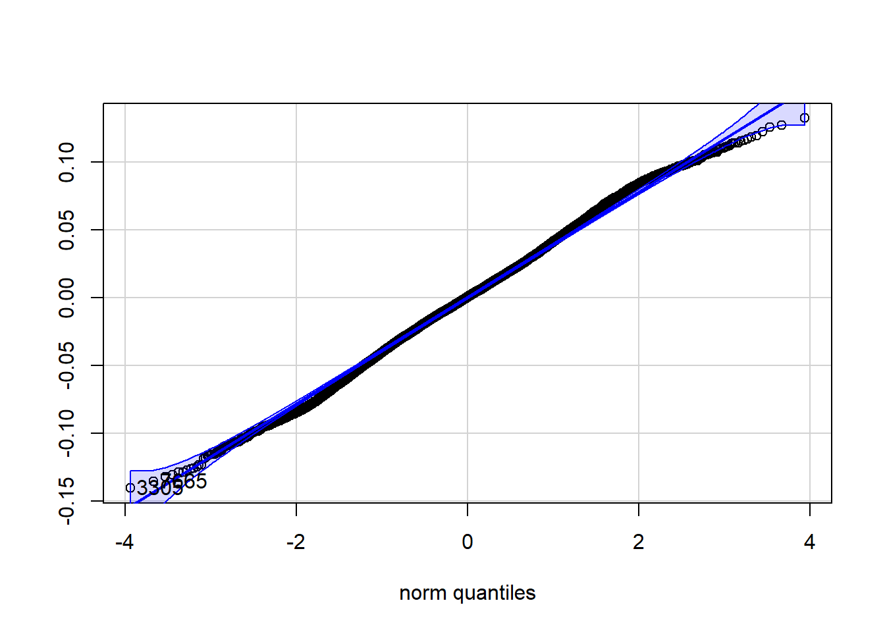
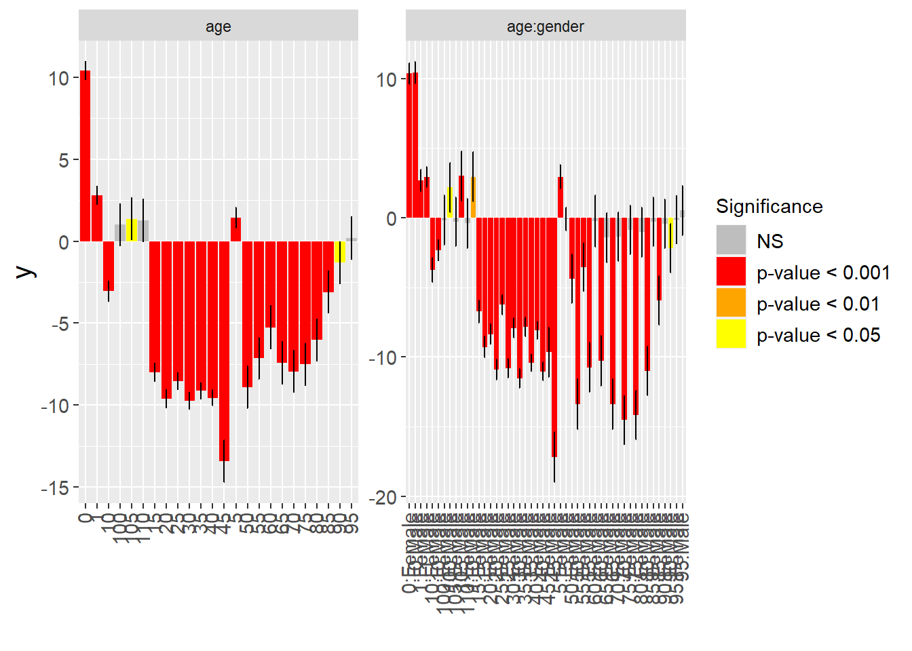
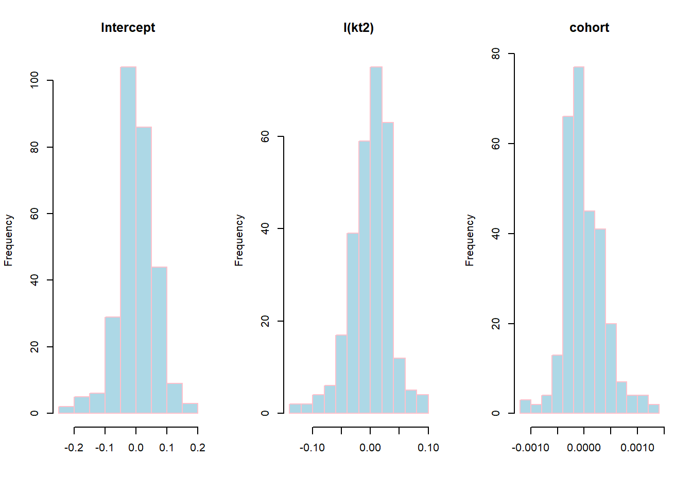

library(data.table) # Efficient data manipulation
library(dplyr) # Data manipulation and transformation
library(ggplot2) # Data visualization
library(HMDHFDplus) # Human Mortality Database-related functions
library(nlme) # Linear and Nonlinear Mixed Effects Models
library(tidyverse) # Collection of tidyverse packages
library(lme4) # Linear Mixed-Effects Models
library(lmerTest) # P-values for lmer models
library(forecast) # Time series forecasting
library(car) # Companion to Applied Regression
library(merTools) # Tools for analyzing mixed-effects regression modelsAge-Gender-Country-Specific Death Rates Modelling and Forecasting: A Linear Mixed-Effects Model
Abstract
A linear mixed-effects (LME) model is proposed for modelling and forecasting single and multi-population age-specific death rates (ASDRs). The innovative approach that we take in this study treats age, the interaction between gender and age, their interactions with predictors, and cohort as fixed effects. Furthermore, we incorporate additional random effects to account for variations in the intercept, predictor coefficients, and cohort effects among different age groups of females and males across various countries. In the single-population case, we will see how the random effects of intercept and slope change over different age groups. We will show that the LME model is identifiable. Using simulating parameter uncertainty in the LME model, we will calculate 95% uncertainty intervals for death rate forecasts. We will use data from the Human Mortality Database (HMD) to illustrate the procedure. We assess the predictive performance of the LME model in comparison to the Lee-Carter (LC) models fitted to individual populations. Additionally, we evaluate the predictive accuracy of the LME model relative to the Li-Lee (LL) model. Our results indicate that the LME model provides a more precise representation of observed mortality rates within the HMD, demonstrates robustness in calibration rate selection, and exhibits superior performance when contrasted with the LC and LL models.
Keywords: Life insurance, Mortality forecasting, Restricted maximum likelihood, Model selection, Random walks with drift.
For more details, refer to the related paper: Age-Gender-Country-Specific Death Rates Modelling and Forecasting: A Linear Mixed-Effects Model:
Affiliation
Department of Mathematics and Statistics, Masaryk University, Kotlářská 2, 611 37 Brno, Czech Republic
Load packages
First, load the packages to be used
Dataset
Importing downloaded datasets from the Human Mortality Database (HMD) website
List of Dataset Filenames
mylistmf<-c(
"AUS.fltper_5x1.txt","AUT.fltper_5x1.txt","BEL.fltper_5x1.txt",
"BGR.fltper_5x1.txt","BLR.fltper_5x1.txt","CAN.fltper_5x1.txt",
"CHE.fltper_5x1.txt","CHL.fltper_5x1.txt","CZE.fltper_5x1.txt",
"DEUTE.fltper_5x1.txt","DEUTW.fltper_5x1.txt","DNK.fltper_5x1.txt",
"ESP.fltper_5x1.txt","EST.fltper_5x1.txt","FIN.fltper_5x1.txt",
"FRATNP.fltper_5x1.txt","GBR_NIR.fltper_5x1.txt","GBR_NP.fltper_5x1.txt",
"GBR_SCO.fltper_5x1.txt","GBRTENW.fltper_5x1.txt","GRC.fltper_5x1.txt",
"HKG.fltper_5x1.txt","HUN.fltper_5x1.txt","IRL.fltper_5x1.txt",
"ISL.fltper_5x1.txt","ISR.fltper_5x1.txt","ITA.fltper_5x1.txt",
"JPN.fltper_5x1.txt","LTU.fltper_5x1.txt","LUX.fltper_5x1.txt",
"LVA.fltper_5x1.txt","NLD.fltper_5x1.txt","NOR.fltper_5x1.txt",
"NZL_NM.fltper_5x1.txt","POL.fltper_5x1.txt","PRT.fltper_5x1.txt",
"RUS.fltper_5x1.txt","SVK.fltper_5x1.txt","SVN.fltper_5x1.txt",
"SWE.fltper_5x1.txt","TWN.fltper_5x1.txt","UKR.fltper_5x1.txt",
"USA.fltper_5x1.txt",
"AUS.mltper_5x1.txt","AUT.mltper_5x1.txt","BEL.mltper_5x1.txt",
"BGR.mltper_5x1.txt","BLR.mltper_5x1.txt","CAN.mltper_5x1.txt",
"CHE.mltper_5x1.txt","CHL.mltper_5x1.txt","CZE.mltper_5x1.txt",
"DEUTE.mltper_5x1.txt","DEUTW.mltper_5x1.txt","DNK.mltper_5x1.txt",
"ESP.mltper_5x1.txt","EST.mltper_5x1.txt","FIN.mltper_5x1.txt",
"FRATNP.mltper_5x1.txt","GBR_NIR.mltper_5x1.txt","GBR_NP.mltper_5x1.txt",
"GBR_SCO.mltper_5x1.txt","GBRTENW.mltper_5x1.txt","GRC.mltper_5x1.txt",
"HKG.mltper_5x1.txt","HUN.mltper_5x1.txt","IRL.mltper_5x1.txt",
"ISL.mltper_5x1.txt","ISR.mltper_5x1.txt","ITA.mltper_5x1.txt",
"JPN.mltper_5x1.txt","LTU.mltper_5x1.txt","LUX.mltper_5x1.txt",
"LVA.mltper_5x1.txt","NLD.mltper_5x1.txt","NOR.mltper_5x1.txt",
"NZL_NM.mltper_5x1.txt","POL.mltper_5x1.txt","PRT.mltper_5x1.txt",
"RUS.mltper_5x1.txt","SVK.mltper_5x1.txt","SVN.mltper_5x1.txt",
"SWE.mltper_5x1.txt","TWN.mltper_5x1.txt","UKR.mltper_5x1.txt",
"USA.mltper_5x1.txt"
)Importing downloaded datasets of AUT, BEL, CHE, CZE, DNK, SWE
# Read and preprocess datasets for selected European countries.
# For each population, a new column 'logmx' is created, representing
# the logarithm of the 'mx' column. Finally, the dataset is filtered
# to include only the years between 1961 and 2019
dat0 <- lapply(c(2, 45, 3, 46, 7, 50, 9, 52, 12, 55, 40, 83), function(i) {
data.table::data.table(HMDHFDplus::readHMD(mylistmf[i]))[, logmx := log(mx)][1961 <= Year & Year <= 2019]
})
# Create matrices (M0) for each population's 'logmx' column.
# Each matrix is of dimensions 59x24, representing the logmx
# values over the years for a specific population.
M0 <- lapply(dat0, function(x) matrix(x$logmx, 59, 24, byrow = TRUE))
# Combine matrices horizontally (column-bind) to form a single matrix (MB0)
MB0 <- do.call(cbind, M0)Construction of ASDRs DataFrame for Training Set
# Subset data
t <- 50
dat <- lapply(dat0, function(x) x[Year <= 2010])
# Initialize matrices for training set
M <- lapply(dat, function(x) matrix(x$logmx, t, 24, byrow = TRUE))
MB <- do.call(cbind, M)# Calculate row means
l <- rowMeans(MB)
# Replicate row means
k1 <- rep(l, times = 288)
# Create a new vector 'k2' by squaring each element in 'k1'
k2 <- k1^2
# Initialize an empty list 'kcList' to store individual elements of kc
kcList <- list()
# Iterate through pairs of matrices in M
for (i in c(1,3,5,7,9,11)) {
# Extract matrices corresponding to the pairs
matrix1 <- M[[i]]
matrix2 <- M[[i + 1]]
# Combine the first 10 columns of each matrix, calculate row means, and replicate them 10 times
result1 <- rep(rowMeans(cbind(matrix1[, 1:10], matrix2[, 1:10])), times = 10)
# Combine the last 14 columns of each matrix, calculate row means, and replicate them 14 times
result2 <- rep(rowMeans(cbind(matrix1[, 11:24], matrix2[, 11:24])), times = 14)
# Repeat the results 2 times and append to kcList
kcList <- c(kcList, rep(c(result1,result2),2))
}
# Combine all elements in kcList into a single vector 'kc1'
kc1 <- unlist(kcList)
# Create a new vector 'kc2' by squaring each element in 'kc1'
kc2 <- kc1^2
# Initialize vectors for training set
year <- rep(unique(dat[[9]]$Year), times = 288)
age_levels <- factor(c(0, 1, seq(5, 110, by = 5)))
age <- rep(c(0, 1, seq(5, 110, by = 5)), each = t, times = 12)
cohort <- year - age
# Initialize vectors for training set
gender_levels <- c("Female", "Male")
gender <- rep(gender_levels, each = 24 * t, times = 6)
# Define age groups
age_groups <- c("Group[0,40]", "Group[45,110]")
# Create a vector representing age groups for each observation
age_groups <- rep(c(rep(age_groups[1], t * 10), rep(age_groups[2], t * 14)), 12)
Country_levels <- c("AUT", "BEL", "CHE", "CZE", "DNK", "SWE")
Country <- rep(Country_levels, each = 48 * t)
# Combine results into data frame for training set
ASDRs <- data.frame(k1, k2, kc1, kc2, cohort, y = as.vector(MB), age,
gender, Country, stringsAsFactors = FALSE)
# Convert factors to specified levels
ASDRs$age <- factor(ASDRs$age, levels = age_levels)
ASDRs$gender <- factor(ASDRs$gender, levels = gender_levels)
ASDRs$Country <- factor(ASDRs$Country, levels = Country_levels)# Display the structure of the resulting data frame
str (ASDRs)'data.frame': 14400 obs. of 9 variables:
$ k1 : num -4.25 -4.22 -4.23 -4.26 -4.26 ...
$ k2 : num 18 17.8 17.9 18.2 18.1 ...
$ kc1 : num -6.47 -6.5 -6.5 -6.51 -6.55 ...
$ kc2 : num 41.8 42.2 42.3 42.3 42.9 ...
$ cohort : num 1961 1962 1963 1964 1965 ...
$ y : num -3.53 -3.51 -3.57 -3.66 -3.67 ...
$ age : Factor w/ 24 levels "0","1","5","10",..: 1 1 1 1 1 1 1 1 1 1 ...
$ gender : Factor w/ 2 levels "Female","Male": 1 1 1 1 1 1 1 1 1 1 ...
$ Country: Factor w/ 6 levels "AUT","BEL","CHE",..: 1 1 1 1 1 1 1 1 1 1 ...# Display the first few rows of the resulting data frame
head(ASDRs) k1 k2 kc1 kc2 cohort y age gender Country
1 -4.245925 18.02788 -6.466235 41.81219 1961 -3.525741 0 Female AUT
2 -4.216007 17.77471 -6.497182 42.21337 1962 -3.511235 0 Female AUT
3 -4.227902 17.87516 -6.501768 42.27299 1963 -3.567016 0 Female AUT
4 -4.262577 18.16956 -6.506316 42.33215 1964 -3.663212 0 Female AUT
5 -4.255166 18.10644 -6.548154 42.87832 1965 -3.670647 0 Female AUT
6 -4.265926 18.19813 -6.525689 42.58461 1966 -3.713172 0 Female AUTData Visualization
# Create a modified dataset for visualization
ASDRsnw <- ASDRs %>%
mutate(Age = age) %>%
mutate(year = as.numeric(as.character(year)))
# Plot ASDRs (log) for the twelve populations from 1961 to 2010
ggplot(ASDRsnw, aes(year, y, color = Age)) +
geom_point(size = 0.15) +
geom_line(linewidth = 0.1) +
facet_grid(gender ~ Country) +
xlab("Year") +
ylab("ASDR (log)") +
theme_bw() +
guides(color = guide_legend(override.aes = list(size = 3))) +
theme(axis.text.x = element_text(angle = 90, hjust = 1))
Plot of \(k_{t}\)
# Plot of $k_{t}$ showing the average log ASDRs across 12 populations and all age groups (1961-2010)
ggplot(ASDRsnw, aes(year, y, color = Age)) +
geom_point(size = 0.7) +
geom_point(aes(x = year, y = k1), color = "black", size = 1) +
geom_line(aes(x = year, y = k1), color = "black", linewidth = 0.7) +
xlab("Year") + ylab("ASDR (log)") +
theme_bw() + guides(color = guide_legend(override.aes = list(size = 5)))
Plot of \(k_{ct}\)
# Plot of $k_{ct}$ showing the log ASDRs for each country in our study (1961 − 2010)
ggplot(ASDRsnw, aes(year, y, color = Age)) +
geom_point(size = 0.3) +
geom_point(aes(x = year, y = kc1, color = age_groups), size = 0.6) +
geom_line(aes(x = year, y = kc1, color = age_groups), linewidth = 0.4) +
scale_color_manual(values = c("Group[0,40]" = "red", "Group[45,110]" = "blue")) +
xlab("Year") + ylab("ASDR (log)") +
facet_grid(~Country) +
theme_bw() +
guides(color = guide_legend(override.aes = list(size = 3))) +
theme(axis.text.x = element_text(angle = 90, hjust = 1), legend.position = "bottom")
Violin Plot
# Violin plots illustrating the distribution and probability density of log mortality rates across the six European countries.
ggplot(ASDRsnw, aes(x = Country, y = y, fill = Country)) +
geom_violin() +
xlab("Country") + ylab("Mortality (log)") +
theme_bw() +
theme(legend.position = "none")
Fit a Linear Mixed-Effects Model Using lmer Function
# Measure the time taken to fit the linear mixed-effects model (m1)
system.time(
m1 <- lmer(y ~
age + gender:age + # Fixed effects terms: main effects and interactions
gender:age:I(kc1) + # Interaction term involving kc1
gender:age:I(kc2) + # Interaction term involving kc2
I(k1) + I(k2) + cohort + # k1, k2, and cohort fixed effects terms
(I(k1) + I(k2) + cohort | Country:gender:age), # Random effects structure
REML = TRUE, # Use Restricted Maximum Likelihood estimation
data = ASDRs # Specify the data
)) user system elapsed
63.60 1.06 94.06 # Display a summary of the fitted linear mixed-effects model
print(summary(m1))Linear mixed model fit by REML. t-tests use Satterthwaite's method [
lmerModLmerTest]
Formula: y ~ age + gender:age + gender:age:I(kc1) + gender:age:I(kc2) +
I(k1) + I(k2) + cohort + (I(k1) + I(k2) + cohort | Country:gender:age)
Data: ASDRs
REML criterion at convergence: -28552.7
Scaled residuals:
Min 1Q Median 3Q Max
-11.7346 -0.4092 0.0077 0.4317 6.0333
Random effects:
Groups Name Variance Std.Dev. Corr
Country:gender:age (Intercept) 6.546e-03 0.08091
I(k1) 6.734e-03 0.08206 0.02
I(k2) 1.782e-02 0.13351 0.00 -0.06
cohort 2.044e-06 0.00143 -0.04 0.17 -0.99
Residual 6.415e-03 0.08009
Number of obs: 14400, groups: Country:gender:age, 288
Fixed effects:
Estimate Std. Error df t value Pr(>|t|)
(Intercept) 4.911e+01 2.146e+00 2.943e+03 22.883 < 2e-16
age1 -2.115e+01 2.948e+00 1.337e+04 -7.175 7.63e-13
age5 -1.957e+01 2.948e+00 1.319e+04 -6.640 3.26e-11
age10 -4.041e+01 2.948e+00 1.347e+04 -13.709 < 2e-16
age15 -5.627e+01 2.948e+00 1.329e+04 -19.091 < 2e-16
age20 -6.506e+01 2.947e+00 1.355e+04 -22.073 < 2e-16
age25 -5.643e+01 2.947e+00 1.337e+04 -19.146 < 2e-16
age30 -6.075e+01 2.947e+00 1.358e+04 -20.615 < 2e-16
age35 -6.031e+01 2.947e+00 1.365e+04 -20.469 < 2e-16
age40 -6.091e+01 2.946e+00 1.342e+04 -20.674 < 2e-16
age45 -5.506e+01 2.616e+00 1.329e+04 -21.045 < 2e-16
age50 -4.949e+01 2.617e+00 1.336e+04 -18.911 < 2e-16
age55 -4.749e+01 2.618e+00 1.341e+04 -18.137 < 2e-16
age60 -4.421e+01 2.619e+00 1.347e+04 -16.881 < 2e-16
age65 -4.389e+01 2.620e+00 1.352e+04 -16.752 < 2e-16
age70 -4.306e+01 2.621e+00 1.356e+04 -16.432 < 2e-16
age75 -4.250e+01 2.622e+00 1.361e+04 -16.211 < 2e-16
age80 -4.348e+01 2.622e+00 1.365e+04 -16.580 < 2e-16
age85 -4.388e+01 2.623e+00 1.366e+04 -16.728 < 2e-16
age90 -4.465e+01 2.624e+00 1.369e+04 -17.016 < 2e-16
age95 -4.537e+01 2.625e+00 1.369e+04 -17.286 < 2e-16
age100 -4.626e+01 2.625e+00 1.376e+04 -17.619 < 2e-16
age105 -4.713e+01 2.626e+00 1.377e+04 -17.947 < 2e-16
age110 -4.777e+01 2.627e+00 1.377e+04 -18.187 < 2e-16
I(k1) 3.091e-02 3.742e-01 1.969e+03 0.083 0.934192
I(k2) 3.608e-03 3.968e-02 1.662e+03 0.091 0.927563
cohort 8.767e-06 5.896e-04 1.380e+04 0.015 0.988136
age0:genderMale -1.242e+00 2.948e+00 1.344e+04 -0.421 0.673455
age1:genderMale 3.062e-01 2.948e+00 1.391e+04 0.104 0.917270
age5:genderMale -1.211e+01 2.948e+00 1.390e+04 -4.108 4.01e-05
age10:genderMale 4.591e-01 2.947e+00 1.387e+04 0.156 0.876214
age15:genderMale -1.156e+01 2.947e+00 1.388e+04 -3.922 8.83e-05
age20:genderMale -7.990e+00 2.946e+00 1.384e+04 -2.712 0.006705
age25:genderMale -1.968e+01 2.946e+00 1.385e+04 -6.679 2.50e-11
age30:genderMale -1.854e+01 2.946e+00 1.384e+04 -6.293 3.21e-10
age35:genderMale -1.469e+01 2.945e+00 1.378e+04 -4.987 6.20e-07
age40:genderMale -1.545e+01 2.945e+00 1.379e+04 -5.248 1.56e-07
age45:genderMale -6.624e+00 2.216e+00 7.587e+03 -2.989 0.002810
age50:genderMale -6.934e+00 2.219e+00 7.903e+03 -3.125 0.001784
age55:genderMale -6.720e+00 2.221e+00 8.148e+03 -3.026 0.002490
age60:genderMale -9.437e+00 2.223e+00 8.370e+03 -4.244 2.22e-05
age65:genderMale -1.320e+01 2.225e+00 8.655e+03 -5.933 3.10e-09
age70:genderMale -1.601e+01 2.228e+00 8.957e+03 -7.186 7.22e-13
age75:genderMale -1.562e+01 2.230e+00 9.208e+03 -7.007 2.60e-12
age80:genderMale -1.196e+01 2.232e+00 9.512e+03 -5.361 8.46e-08
age85:genderMale -6.806e+00 2.233e+00 9.822e+03 -3.047 0.002316
age90:genderMale -2.790e+00 2.235e+00 1.013e+04 -1.248 0.211973
age95:genderMale 1.915e-01 2.237e+00 1.044e+04 0.086 0.931782
age100:genderMale 2.226e+00 2.239e+00 1.069e+04 0.994 0.320033
age105:genderMale 3.165e+00 2.240e+00 1.101e+04 1.413 0.157705
age110:genderMale 3.344e+00 2.242e+00 1.131e+04 1.492 0.135756
age0:genderFemale:I(kc1) 1.407e+01 6.032e-01 8.594e+03 23.331 < 2e-16
age1:genderFemale:I(kc1) 8.306e+00 6.033e-01 1.356e+04 13.768 < 2e-16
age5:genderFemale:I(kc1) 9.379e+00 6.033e-01 1.315e+04 15.546 < 2e-16
age10:genderFemale:I(kc1) 3.757e+00 6.033e-01 1.366e+04 6.228 4.87e-10
age15:genderFemale:I(kc1) -6.064e-01 6.034e-01 1.341e+04 -1.005 0.314857
age20:genderFemale:I(kc1) -3.266e+00 6.034e-01 1.377e+04 -5.414 6.28e-08
age25:genderFemale:I(kc1) -8.197e-01 6.034e-01 1.343e+04 -1.359 0.174317
age30:genderFemale:I(kc1) -2.001e+00 6.034e-01 1.379e+04 -3.316 0.000917
age35:genderFemale:I(kc1) -1.867e+00 6.034e-01 1.389e+04 -3.094 0.001976
age40:genderFemale:I(kc1) -1.971e+00 6.034e-01 1.337e+04 -3.266 0.001093
age45:genderFemale:I(kc1) -9.177e-01 1.264e+00 4.994e+03 -0.726 0.467977
age50:genderFemale:I(kc1) 2.850e+00 1.266e+00 5.282e+03 2.251 0.024404
age55:genderFemale:I(kc1) 3.771e+00 1.268e+00 5.520e+03 2.974 0.002948
age60:genderFemale:I(kc1) 5.746e+00 1.270e+00 5.698e+03 4.526 6.12e-06
age65:genderFemale:I(kc1) 5.541e+00 1.271e+00 5.970e+03 4.359 1.33e-05
age70:genderFemale:I(kc1) 5.850e+00 1.273e+00 6.267e+03 4.596 4.39e-06
age75:genderFemale:I(kc1) 5.955e+00 1.274e+00 6.488e+03 4.673 3.03e-06
age80:genderFemale:I(kc1) 4.907e+00 1.276e+00 6.801e+03 3.846 0.000121
age85:genderFemale:I(kc1) 4.297e+00 1.277e+00 7.155e+03 3.364 0.000772
age90:genderFemale:I(kc1) 3.462e+00 1.278e+00 7.482e+03 2.708 0.006779
age95:genderFemale:I(kc1) 2.748e+00 1.280e+00 7.849e+03 2.147 0.031806
age100:genderFemale:I(kc1) 2.002e+00 1.281e+00 8.053e+03 1.563 0.118053
age105:genderFemale:I(kc1) 1.329e+00 1.282e+00 8.449e+03 1.036 0.300083
age110:genderFemale:I(kc1) 8.569e-01 1.283e+00 8.829e+03 0.668 0.504321
age0:genderMale:I(kc1) 1.361e+01 6.032e-01 1.367e+04 22.562 < 2e-16
age1:genderMale:I(kc1) 8.627e+00 6.033e-01 1.357e+04 14.300 < 2e-16
age5:genderMale:I(kc1) 6.017e+00 6.033e-01 1.337e+04 9.974 < 2e-16
age10:genderMale:I(kc1) 3.596e+00 6.033e-01 1.366e+04 5.960 2.58e-09
age15:genderMale:I(kc1) -4.102e+00 6.034e-01 1.342e+04 -6.799 1.10e-11
age20:genderMale:I(kc1) -5.778e+00 6.034e-01 1.371e+04 -9.576 < 2e-16
age25:genderMale:I(kc1) -6.704e+00 6.034e-01 1.351e+04 -11.110 < 2e-16
age30:genderMale:I(kc1) -7.736e+00 6.034e-01 1.369e+04 -12.820 < 2e-16
age35:genderMale:I(kc1) -6.270e+00 6.034e-01 1.387e+04 -10.390 < 2e-16
age40:genderMale:I(kc1) -6.520e+00 6.034e-01 1.342e+04 -10.806 < 2e-16
age45:genderMale:I(kc1) -7.331e+00 1.264e+00 5.002e+03 -5.798 7.11e-09
age50:genderMale:I(kc1) -3.531e+00 1.266e+00 5.296e+03 -2.789 0.005311
age55:genderMale:I(kc1) -2.050e+00 1.268e+00 5.502e+03 -1.617 0.105939
age60:genderMale:I(kc1) -1.769e+00 1.270e+00 5.705e+03 -1.393 0.163628
age65:genderMale:I(kc1) -4.656e+00 1.271e+00 5.972e+03 -3.663 0.000251
age70:genderMale:I(kc1) -6.506e+00 1.273e+00 6.267e+03 -5.112 3.29e-07
age75:genderMale:I(kc1) -6.217e+00 1.274e+00 6.498e+03 -4.879 1.09e-06
age80:genderMale:I(kc1) -4.385e+00 1.276e+00 6.825e+03 -3.437 0.000591
age85:genderMale:I(kc1) -9.693e-01 1.277e+00 7.140e+03 -0.759 0.447914
age90:genderMale:I(kc1) 1.343e+00 1.278e+00 7.469e+03 1.050 0.293708
age95:genderMale:I(kc1) 2.978e+00 1.280e+00 7.861e+03 2.327 0.019998
age100:genderMale:I(kc1) 3.805e+00 1.281e+00 8.103e+03 2.971 0.002980
age105:genderMale:I(kc1) 3.842e+00 1.282e+00 8.435e+03 2.996 0.002740
age110:genderMale:I(kc1) 3.491e+00 1.283e+00 8.831e+03 2.720 0.006536
age0:genderFemale:I(kc2) 9.100e-01 4.283e-02 8.697e+03 21.248 < 2e-16
age1:genderFemale:I(kc2) 4.599e-01 4.283e-02 1.290e+04 10.738 < 2e-16
age5:genderFemale:I(kc2) 5.645e-01 4.284e-02 1.256e+04 13.177 < 2e-16
age10:genderFemale:I(kc2) 1.859e-01 4.285e-02 1.304e+04 4.338 1.45e-05
age15:genderFemale:I(kc2) -1.000e-01 4.286e-02 1.283e+04 -2.334 0.019606
age20:genderFemale:I(kc2) -2.969e-01 4.287e-02 1.319e+04 -6.926 4.52e-12
age25:genderFemale:I(kc2) -1.213e-01 4.287e-02 1.291e+04 -2.829 0.004675
age30:genderFemale:I(kc2) -1.955e-01 4.288e-02 1.326e+04 -4.558 5.21e-06
age35:genderFemale:I(kc2) -1.769e-01 4.289e-02 1.339e+04 -4.125 3.72e-05
age40:genderFemale:I(kc2) -1.702e-01 4.290e-02 1.291e+04 -3.968 7.30e-05
age45:genderFemale:I(kc2) -3.404e-01 2.483e-01 3.605e+03 -1.371 0.170454
age50:genderFemale:I(kc2) 3.492e-01 2.487e-01 3.812e+03 1.404 0.160397
age55:genderFemale:I(kc2) 4.717e-01 2.492e-01 3.992e+03 1.893 0.058445
age60:genderFemale:I(kc2) 8.151e-01 2.496e-01 4.140e+03 3.266 0.001101
age65:genderFemale:I(kc2) 7.642e-01 2.500e-01 4.347e+03 3.056 0.002253
age70:genderFemale:I(kc2) 8.421e-01 2.504e-01 4.576e+03 3.363 0.000778
age75:genderFemale:I(kc2) 8.850e-01 2.508e-01 4.761e+03 3.529 0.000422
age80:genderFemale:I(kc2) 7.141e-01 2.512e-01 5.008e+03 2.843 0.004489
age85:genderFemale:I(kc2) 6.193e-01 2.516e-01 5.287e+03 2.462 0.013847
age90:genderFemale:I(kc2) 4.825e-01 2.519e-01 5.556e+03 1.915 0.055484
age95:genderFemale:I(kc2) 3.738e-01 2.522e-01 5.858e+03 1.482 0.138414
age100:genderFemale:I(kc2) 2.650e-01 2.526e-01 6.062e+03 1.049 0.294215
age105:genderFemale:I(kc2) 1.696e-01 2.529e-01 6.399e+03 0.671 0.502485
age110:genderFemale:I(kc2) 1.033e-01 2.532e-01 6.733e+03 0.408 0.683153
age0:genderMale:I(kc2) 8.745e-01 4.283e-02 1.300e+04 20.419 < 2e-16
age1:genderMale:I(kc2) 5.030e-01 4.283e-02 1.291e+04 11.744 < 2e-16
age5:genderMale:I(kc2) 3.386e-01 4.284e-02 1.275e+04 7.905 2.90e-15
age10:genderMale:I(kc2) 1.625e-01 4.285e-02 1.303e+04 3.794 0.000149
age15:genderMale:I(kc2) -3.451e-01 4.286e-02 1.284e+04 -8.052 8.85e-16
age20:genderMale:I(kc2) -4.698e-01 4.287e-02 1.314e+04 -10.960 < 2e-16
age25:genderMale:I(kc2) -5.401e-01 4.287e-02 1.298e+04 -12.597 < 2e-16
age30:genderMale:I(kc2) -6.194e-01 4.288e-02 1.317e+04 -14.443 < 2e-16
age35:genderMale:I(kc2) -4.924e-01 4.289e-02 1.337e+04 -11.480 < 2e-16
age40:genderMale:I(kc2) -4.922e-01 4.290e-02 1.296e+04 -11.472 < 2e-16
age45:genderMale:I(kc2) -1.728e+00 2.483e-01 3.610e+03 -6.958 4.09e-12
age50:genderMale:I(kc2) -9.759e-01 2.487e-01 3.820e+03 -3.923 8.89e-05
age55:genderMale:I(kc2) -6.659e-01 2.492e-01 3.981e+03 -2.672 0.007568
age60:genderMale:I(kc2) -5.706e-01 2.496e-01 4.144e+03 -2.286 0.022301
age65:genderMale:I(kc2) -1.100e+00 2.500e-01 4.349e+03 -4.400 1.11e-05
age70:genderMale:I(kc2) -1.449e+00 2.504e-01 4.575e+03 -5.786 7.67e-09
age75:genderMale:I(kc2) -1.409e+00 2.508e-01 4.767e+03 -5.618 2.04e-08
age80:genderMale:I(kc2) -1.035e+00 2.512e-01 5.023e+03 -4.119 3.87e-05
age85:genderMale:I(kc2) -3.621e-01 2.516e-01 5.277e+03 -1.440 0.150037
age90:genderMale:I(kc2) 1.051e-01 2.519e-01 5.548e+03 0.417 0.676485
age95:genderMale:I(kc2) 4.462e-01 2.522e-01 5.866e+03 1.769 0.076980
age100:genderMale:I(kc2) 6.329e-01 2.526e-01 6.093e+03 2.506 0.012249
age105:genderMale:I(kc2) 6.665e-01 2.529e-01 6.389e+03 2.636 0.008416
age110:genderMale:I(kc2) 6.181e-01 2.532e-01 6.735e+03 2.441 0.014663
(Intercept) ***
age1 ***
age5 ***
age10 ***
age15 ***
age20 ***
age25 ***
age30 ***
age35 ***
age40 ***
age45 ***
age50 ***
age55 ***
age60 ***
age65 ***
age70 ***
age75 ***
age80 ***
age85 ***
age90 ***
age95 ***
age100 ***
age105 ***
age110 ***
I(k1)
I(k2)
cohort
age0:genderMale
age1:genderMale
age5:genderMale ***
age10:genderMale
age15:genderMale ***
age20:genderMale **
age25:genderMale ***
age30:genderMale ***
age35:genderMale ***
age40:genderMale ***
age45:genderMale **
age50:genderMale **
age55:genderMale **
age60:genderMale ***
age65:genderMale ***
age70:genderMale ***
age75:genderMale ***
age80:genderMale ***
age85:genderMale **
age90:genderMale
age95:genderMale
age100:genderMale
age105:genderMale
age110:genderMale
age0:genderFemale:I(kc1) ***
age1:genderFemale:I(kc1) ***
age5:genderFemale:I(kc1) ***
age10:genderFemale:I(kc1) ***
age15:genderFemale:I(kc1)
age20:genderFemale:I(kc1) ***
age25:genderFemale:I(kc1)
age30:genderFemale:I(kc1) ***
age35:genderFemale:I(kc1) **
age40:genderFemale:I(kc1) **
age45:genderFemale:I(kc1)
age50:genderFemale:I(kc1) *
age55:genderFemale:I(kc1) **
age60:genderFemale:I(kc1) ***
age65:genderFemale:I(kc1) ***
age70:genderFemale:I(kc1) ***
age75:genderFemale:I(kc1) ***
age80:genderFemale:I(kc1) ***
age85:genderFemale:I(kc1) ***
age90:genderFemale:I(kc1) **
age95:genderFemale:I(kc1) *
age100:genderFemale:I(kc1)
age105:genderFemale:I(kc1)
age110:genderFemale:I(kc1)
age0:genderMale:I(kc1) ***
age1:genderMale:I(kc1) ***
age5:genderMale:I(kc1) ***
age10:genderMale:I(kc1) ***
age15:genderMale:I(kc1) ***
age20:genderMale:I(kc1) ***
age25:genderMale:I(kc1) ***
age30:genderMale:I(kc1) ***
age35:genderMale:I(kc1) ***
age40:genderMale:I(kc1) ***
age45:genderMale:I(kc1) ***
age50:genderMale:I(kc1) **
age55:genderMale:I(kc1)
age60:genderMale:I(kc1)
age65:genderMale:I(kc1) ***
age70:genderMale:I(kc1) ***
age75:genderMale:I(kc1) ***
age80:genderMale:I(kc1) ***
age85:genderMale:I(kc1)
age90:genderMale:I(kc1)
age95:genderMale:I(kc1) *
age100:genderMale:I(kc1) **
age105:genderMale:I(kc1) **
age110:genderMale:I(kc1) **
age0:genderFemale:I(kc2) ***
age1:genderFemale:I(kc2) ***
age5:genderFemale:I(kc2) ***
age10:genderFemale:I(kc2) ***
age15:genderFemale:I(kc2) *
age20:genderFemale:I(kc2) ***
age25:genderFemale:I(kc2) **
age30:genderFemale:I(kc2) ***
age35:genderFemale:I(kc2) ***
age40:genderFemale:I(kc2) ***
age45:genderFemale:I(kc2)
age50:genderFemale:I(kc2)
age55:genderFemale:I(kc2) .
age60:genderFemale:I(kc2) **
age65:genderFemale:I(kc2) **
age70:genderFemale:I(kc2) ***
age75:genderFemale:I(kc2) ***
age80:genderFemale:I(kc2) **
age85:genderFemale:I(kc2) *
age90:genderFemale:I(kc2) .
age95:genderFemale:I(kc2)
age100:genderFemale:I(kc2)
age105:genderFemale:I(kc2)
age110:genderFemale:I(kc2)
age0:genderMale:I(kc2) ***
age1:genderMale:I(kc2) ***
age5:genderMale:I(kc2) ***
age10:genderMale:I(kc2) ***
age15:genderMale:I(kc2) ***
age20:genderMale:I(kc2) ***
age25:genderMale:I(kc2) ***
age30:genderMale:I(kc2) ***
age35:genderMale:I(kc2) ***
age40:genderMale:I(kc2) ***
age45:genderMale:I(kc2) ***
age50:genderMale:I(kc2) ***
age55:genderMale:I(kc2) **
age60:genderMale:I(kc2) *
age65:genderMale:I(kc2) ***
age70:genderMale:I(kc2) ***
age75:genderMale:I(kc2) ***
age80:genderMale:I(kc2) ***
age85:genderMale:I(kc2)
age90:genderMale:I(kc2)
age95:genderMale:I(kc2) .
age100:genderMale:I(kc2) *
age105:genderMale:I(kc2) **
age110:genderMale:I(kc2) *
---
Signif. codes: 0 '***' 0.001 '**' 0.01 '*' 0.05 '.' 0.1 ' ' 1
Correlation matrix not shown by default, as p = 147 > 12.
Use print(summary(m1), correlation=TRUE) or
vcov(summary(m1)) if you need itoptimizer (nloptwrap) convergence code: 0 (OK)
unable to evaluate scaled gradient
Model failed to converge: degenerate Hessian with 5 negative eigenvaluesCheck for Heteroskedasticity and Assess Normality
# Add fitted values and residuals to the ASDRs data frame
ASDRs$fit <- fitted(m1)
ASDRs$res <- resid(m1)
# Scatter plot to check for heteroskedasticity
plot(ASDRs$fit, ASDRs$res,
main = "LME Model for the Twelve Populations",
xlab = "Fitted Values", ylab = "Residuals",
pch = 1, frame = FALSE, cex = 0.5, col = "black"
)
# Quantile-quantile plot to assess normality assumption
qqPlot(ASDRs$res,
ylab = deparse(substitute())
)
[1] 9737 9698Refine the Model
# Filter out data points with absolute residuals outside the range [-0.10, 0.10]
ASDRs2 <- ASDRs[abs(ASDRs$res) <= 0.10, ]
# Fit a linear mixed-effects model (LME) to the refined dataset ASDRs2
m2 <- lmer(y ~ age + gender:age +
gender:age:kc1 + gender:age:kc2 +
k1 + k2 + cohort +
(k1 + k2 + cohort | Country:gender:age),
REML = TRUE, data = ASDRs2,
control = lmerControl(optimizer = "optimx", optCtrl = list(method = "nlminb"))
)Check for Heteroskedasticity and Assess Normality (Refined Model)
# Add fitted values and residuals to the ASDRs2 data frame
ASDRs2$fit <- fitted(m2)
ASDRs2$res <- resid(m2)
# Scatter plot to check for heteroskedasticity
plot(ASDRs2$fit, ASDRs2$res,
xlab = "Fitted Values", ylab = "Residuals",
pch = 1, frame = FALSE, cex = 0.09, col = "black"
)
# Quantile-quantile plot to assess normality assumption
qqPlot(ASDRs2$res,
ylab = deparse(substitute())
)
[1] 3305 7665Backward Stepwise Selection
# Perform backward stepwise selection on the LME model m2
system.time(
step_lme2 <- lmerTest::step(m2)
) user system elapsed
327.28 2.61 893.45 Performing backward stepwise model selection with linear mixed-effects models can be computationally intensive for several reasons:
Complexity of the Model: LME models, especially those with a large number of fixed and random effects, can be computationally demanding. Backward stepwise model selection involves fitting and comparing multiple models, and the complexity of the model can significantly impact the time it takes to fit each model.
Number of Observations: If your dataset has a large number of observations, the time required for model fitting can increase. More data points may lead to longer computation times.
# Extract the final model from the stepwise selection
m3 <- get_model(step_lme2)# Display the summary of the final selected model m3
print(summary(m3))Linear mixed model fit by REML. t-tests use Satterthwaite's method [
lmerModLmerTest]
Formula: y ~ age + k2 + cohort + (k2 + cohort | Country:gender:age) +
age:gender + age:gender:kc1 + age:gender:kc2
Data: ASDRs2
Control: lmerControl(optimizer = "optimx", optCtrl = list(method = "nlminb"))
REML criterion at convergence: -39467.6
Scaled residuals:
Min 1Q Median 3Q Max
-3.3602 -0.6248 0.0048 0.6190 3.1160
Random effects:
Groups Name Variance Std.Dev. Corr
Country:gender:age (Intercept) 4.408e-03 0.0663949
k2 1.264e-03 0.0355529 -0.15
cohort 1.476e-07 0.0003842 -0.03 -0.98
Residual 1.786e-03 0.0422659
Number of obs: 12228, groups: Country:gender:age, 288
Fixed effects:
Estimate Std. Error df t value Pr(>|t|)
(Intercept) 4.987e+01 1.410e+00 1.124e+04 35.377 < 2e-16 ***
age1 -2.255e+01 2.022e+00 1.149e+04 -11.151 < 2e-16 ***
age5 -1.850e+01 2.147e+00 1.165e+04 -8.617 < 2e-16 ***
age10 -4.242e+01 2.169e+00 1.171e+04 -19.556 < 2e-16 ***
age15 -5.455e+01 2.048e+00 1.169e+04 -26.635 < 2e-16 ***
age20 -6.148e+01 2.029e+00 1.145e+04 -30.305 < 2e-16 ***
age25 -5.400e+01 1.929e+00 1.142e+04 -27.999 < 2e-16 ***
age30 -6.075e+01 1.913e+00 1.140e+04 -31.762 < 2e-16 ***
age35 -6.129e+01 1.899e+00 1.141e+04 -32.272 < 2e-16 ***
age40 -6.282e+01 1.843e+00 1.143e+04 -34.083 < 2e-16 ***
age45 -5.362e+01 1.630e+00 1.130e+04 -32.886 < 2e-16 ***
age50 -4.808e+01 1.623e+00 1.128e+04 -29.625 < 2e-16 ***
age55 -4.606e+01 1.623e+00 1.129e+04 -28.382 < 2e-16 ***
age60 -4.240e+01 1.633e+00 1.126e+04 -25.966 < 2e-16 ***
age65 -4.306e+01 1.625e+00 1.130e+04 -26.497 < 2e-16 ***
age70 -4.308e+01 1.617e+00 1.129e+04 -26.637 < 2e-16 ***
age75 -4.305e+01 1.619e+00 1.127e+04 -26.592 < 2e-16 ***
age80 -4.404e+01 1.619e+00 1.129e+04 -27.198 < 2e-16 ***
age85 -4.376e+01 1.617e+00 1.126e+04 -27.053 < 2e-16 ***
age90 -4.446e+01 1.618e+00 1.121e+04 -27.474 < 2e-16 ***
age95 -4.484e+01 1.617e+00 1.127e+04 -27.726 < 2e-16 ***
age100 -4.565e+01 1.617e+00 1.128e+04 -28.224 < 2e-16 ***
age105 -4.651e+01 1.618e+00 1.126e+04 -28.749 < 2e-16 ***
age110 -4.716e+01 1.618e+00 1.128e+04 -29.150 < 2e-16 ***
k2 6.051e-03 3.044e-03 5.934e+02 1.987 0.047339 *
cohort -1.033e-03 2.334e-04 1.108e+04 -4.428 9.62e-06 ***
age0:genderMale -6.683e-01 2.016e+00 1.151e+04 -0.332 0.740247
age1:genderMale 9.203e-01 2.016e+00 1.155e+04 0.457 0.647997
age5:genderMale -1.279e+01 2.267e+00 1.172e+04 -5.642 1.72e-08 ***
age10:genderMale 3.220e+00 2.202e+00 1.176e+04 1.462 0.143689
age15:genderMale -1.235e+01 2.039e+00 1.166e+04 -6.057 1.43e-09 ***
age20:genderMale -1.287e+01 2.013e+00 1.161e+04 -6.395 1.67e-10 ***
age25:genderMale -2.007e+01 1.864e+00 1.153e+04 -10.768 < 2e-16 ***
age30:genderMale -1.628e+01 1.852e+00 1.153e+04 -8.788 < 2e-16 ***
age35:genderMale -1.189e+01 1.755e+00 1.149e+04 -6.773 1.33e-11 ***
age40:genderMale -1.309e+01 1.736e+00 1.149e+04 -7.542 4.99e-14 ***
age45:genderMale -5.245e+00 1.200e+00 1.016e+04 -4.370 1.25e-05 ***
age50:genderMale -6.697e+00 1.190e+00 1.028e+04 -5.629 1.86e-08 ***
age55:genderMale -6.570e+00 1.175e+00 1.016e+04 -5.590 2.33e-08 ***
age60:genderMale -1.101e+01 1.194e+00 9.772e+03 -9.221 < 2e-16 ***
age65:genderMale -1.381e+01 1.181e+00 1.011e+04 -11.693 < 2e-16 ***
age70:genderMale -1.524e+01 1.165e+00 1.019e+04 -13.076 < 2e-16 ***
age75:genderMale -1.470e+01 1.160e+00 1.026e+04 -12.673 < 2e-16 ***
age80:genderMale -1.083e+01 1.160e+00 1.022e+04 -9.339 < 2e-16 ***
age85:genderMale -6.387e+00 1.158e+00 1.015e+04 -5.516 3.54e-08 ***
age90:genderMale -2.444e+00 1.159e+00 9.989e+03 -2.109 0.034987 *
age95:genderMale 7.980e-02 1.159e+00 1.009e+04 0.069 0.945114
age100:genderMale 1.961e+00 1.160e+00 1.018e+04 1.691 0.090872 .
age105:genderMale 3.035e+00 1.159e+00 1.018e+04 2.618 0.008858 **
age110:genderMale 3.210e+00 1.160e+00 1.028e+04 2.768 0.005646 **
age0:genderFemale:kc1 1.354e+01 3.951e-01 1.089e+04 34.272 < 2e-16 ***
age1:genderFemale:kc1 7.705e+00 4.150e-01 1.174e+04 18.567 < 2e-16 ***
age5:genderFemale:kc1 9.263e+00 4.578e-01 1.171e+04 20.233 < 2e-16 ***
age10:genderFemale:kc1 2.956e+00 4.649e-01 1.175e+04 6.357 2.14e-10 ***
age15:genderFemale:kc1 -3.641e-01 4.167e-01 1.165e+04 -0.874 0.382241
age20:genderFemale:kc1 -2.414e+00 4.231e-01 1.171e+04 -5.705 1.19e-08 ***
age25:genderFemale:kc1 -3.981e-01 3.797e-01 1.172e+04 -1.048 0.294461
age30:genderFemale:kc1 -2.257e+00 3.733e-01 1.172e+04 -6.047 1.52e-09 ***
age35:genderFemale:kc1 -2.458e+00 3.670e-01 1.163e+04 -6.698 2.21e-11 ***
age40:genderFemale:kc1 -2.836e+00 3.420e-01 1.162e+04 -8.292 < 2e-16 ***
age45:genderFemale:kc1 -7.456e-01 6.637e-01 9.161e+03 -1.123 0.261311
age50:genderFemale:kc1 3.112e+00 6.532e-01 9.211e+03 4.764 1.92e-06 ***
age55:genderFemale:kc1 4.039e+00 6.549e-01 9.043e+03 6.167 7.24e-10 ***
age60:genderFemale:kc1 6.420e+00 6.732e-01 8.172e+03 9.537 < 2e-16 ***
age65:genderFemale:kc1 5.397e+00 6.597e-01 8.901e+03 8.180 3.23e-16 ***
age70:genderFemale:kc1 4.978e+00 6.474e-01 9.184e+03 7.689 1.63e-14 ***
age75:genderFemale:kc1 4.677e+00 6.492e-01 9.140e+03 7.205 6.28e-13 ***
age80:genderFemale:kc1 3.665e+00 6.495e-01 9.254e+03 5.643 1.72e-08 ***
age85:genderFemale:kc1 3.579e+00 6.479e-01 9.166e+03 5.524 3.40e-08 ***
age90:genderFemale:kc1 2.804e+00 6.492e-01 8.952e+03 4.319 1.58e-05 ***
age95:genderFemale:kc1 2.365e+00 6.481e-01 9.204e+03 3.650 0.000264 ***
age100:genderFemale:kc1 1.692e+00 6.483e-01 9.281e+03 2.610 0.009062 **
age105:genderFemale:kc1 1.045e+00 6.485e-01 9.199e+03 1.611 0.107126
age110:genderFemale:kc1 5.704e-01 6.488e-01 9.291e+03 0.879 0.379285
age0:genderMale:kc1 1.324e+01 4.111e-01 1.172e+04 32.208 < 2e-16 ***
age1:genderMale:kc1 8.040e+00 3.889e-01 1.160e+04 20.676 < 2e-16 ***
age5:genderMale:kc1 5.546e+00 4.400e-01 1.166e+04 12.605 < 2e-16 ***
age10:genderMale:kc1 3.492e+00 4.080e-01 1.171e+04 8.558 < 2e-16 ***
age15:genderMale:kc1 -4.086e+00 3.882e-01 1.163e+04 -10.526 < 2e-16 ***
age20:genderMale:kc1 -6.331e+00 3.893e-01 1.172e+04 -16.262 < 2e-16 ***
age25:genderMale:kc1 -6.272e+00 3.734e-01 1.169e+04 -16.796 < 2e-16 ***
age30:genderMale:kc1 -7.082e+00 3.706e-01 1.159e+04 -19.107 < 2e-16 ***
age35:genderMale:kc1 -5.999e+00 3.368e-01 1.160e+04 -17.813 < 2e-16 ***
age40:genderMale:kc1 -6.697e+00 3.529e-01 1.155e+04 -18.974 < 2e-16 ***
age45:genderMale:kc1 -5.821e+00 6.733e-01 8.716e+03 -8.646 < 2e-16 ***
age50:genderMale:kc1 -3.121e+00 6.726e-01 9.018e+03 -4.641 3.52e-06 ***
age55:genderMale:kc1 -1.701e+00 6.576e-01 9.117e+03 -2.586 0.009719 **
age60:genderMale:kc1 -2.348e+00 6.636e-01 9.138e+03 -3.539 0.000404 ***
age65:genderMale:kc1 -5.278e+00 6.607e-01 9.156e+03 -7.989 1.53e-15 ***
age70:genderMale:kc1 -6.669e+00 6.553e-01 9.121e+03 -10.177 < 2e-16 ***
age75:genderMale:kc1 -6.645e+00 6.477e-01 9.327e+03 -10.259 < 2e-16 ***
age80:genderMale:kc1 -4.718e+00 6.473e-01 9.158e+03 -7.289 3.38e-13 ***
age85:genderMale:kc1 -1.334e+00 6.476e-01 9.122e+03 -2.061 0.039371 *
age90:genderMale:kc1 9.694e-01 6.478e-01 9.059e+03 1.496 0.134588
age95:genderMale:kc1 2.502e+00 6.490e-01 8.997e+03 3.854 0.000117 ***
age100:genderMale:kc1 3.268e+00 6.496e-01 9.089e+03 5.032 4.95e-07 ***
age105:genderMale:kc1 3.436e+00 6.485e-01 9.191e+03 5.299 1.19e-07 ***
age110:genderMale:kc1 3.079e+00 6.488e-01 9.262e+03 4.745 2.11e-06 ***
age0:genderFemale:kc2 8.571e-01 2.808e-02 1.064e+04 30.523 < 2e-16 ***
age1:genderFemale:kc2 4.254e-01 2.951e-02 1.162e+04 14.415 < 2e-16 ***
age5:genderFemale:kc2 5.490e-01 3.221e-02 1.174e+04 17.044 < 2e-16 ***
age10:genderFemale:kc2 1.348e-01 3.257e-02 1.173e+04 4.138 3.53e-05 ***
age15:genderFemale:kc2 -7.819e-02 2.901e-02 1.176e+04 -2.696 0.007038 **
age20:genderFemale:kc2 -2.261e-01 3.033e-02 1.116e+04 -7.456 9.55e-14 ***
age25:genderFemale:kc2 -8.835e-02 2.710e-02 1.150e+04 -3.260 0.001117 **
age30:genderFemale:kc2 -2.101e-01 2.668e-02 1.143e+04 -7.873 3.77e-15 ***
age35:genderFemale:kc2 -2.193e-01 2.610e-02 1.162e+04 -8.404 < 2e-16 ***
age40:genderFemale:kc2 -2.330e-01 2.423e-02 1.173e+04 -9.618 < 2e-16 ***
age45:genderFemale:kc2 -3.293e-01 1.297e-01 7.640e+03 -2.540 0.011114 *
age50:genderFemale:kc2 3.964e-01 1.278e-01 7.674e+03 3.102 0.001928 **
age55:genderFemale:kc2 5.196e-01 1.283e-01 7.524e+03 4.050 5.17e-05 ***
age60:genderFemale:kc2 9.591e-01 1.324e-01 6.637e+03 7.244 4.83e-13 ***
age65:genderFemale:kc2 7.393e-01 1.294e-01 7.378e+03 5.713 1.15e-08 ***
age70:genderFemale:kc2 6.635e-01 1.269e-01 7.681e+03 5.229 1.75e-07 ***
age75:genderFemale:kc2 6.270e-01 1.272e-01 7.649e+03 4.928 8.47e-07 ***
age80:genderFemale:kc2 4.708e-01 1.273e-01 7.744e+03 3.699 0.000218 ***
age85:genderFemale:kc2 4.767e-01 1.270e-01 7.675e+03 3.753 0.000176 ***
age90:genderFemale:kc2 3.528e-01 1.273e-01 7.501e+03 2.771 0.005604 **
age95:genderFemale:kc2 3.000e-01 1.271e-01 7.711e+03 2.360 0.018290 *
age100:genderFemale:kc2 2.071e-01 1.272e-01 7.774e+03 1.629 0.103378
age105:genderFemale:kc2 1.178e-01 1.272e-01 7.710e+03 0.926 0.354511
age110:genderFemale:kc2 5.115e-02 1.273e-01 7.786e+03 0.402 0.687793
age0:genderMale:kc2 8.329e-01 2.907e-02 1.187e+04 28.653 < 2e-16 ***
age1:genderMale:kc2 4.580e-01 2.743e-02 1.176e+04 16.699 < 2e-16 ***
age5:genderMale:kc2 2.866e-01 3.085e-02 1.177e+04 9.292 < 2e-16 ***
age10:genderMale:kc2 1.550e-01 2.888e-02 1.171e+04 5.367 8.17e-08 ***
age15:genderMale:kc2 -3.395e-01 2.742e-02 1.168e+04 -12.380 < 2e-16 ***
age20:genderMale:kc2 -4.996e-01 2.767e-02 1.165e+04 -18.055 < 2e-16 ***
age25:genderMale:kc2 -4.979e-01 2.680e-02 1.114e+04 -18.577 < 2e-16 ***
age30:genderMale:kc2 -5.507e-01 2.629e-02 1.148e+04 -20.951 < 2e-16 ***
age35:genderMale:kc2 -4.689e-01 2.385e-02 1.170e+04 -19.658 < 2e-16 ***
age40:genderMale:kc2 -5.047e-01 2.501e-02 1.154e+04 -20.178 < 2e-16 ***
age45:genderMale:kc2 -1.406e+00 1.318e-01 6.915e+03 -10.666 < 2e-16 ***
age50:genderMale:kc2 -9.026e-01 1.316e-01 7.305e+03 -6.860 7.47e-12 ***
age55:genderMale:kc2 -6.075e-01 1.288e-01 7.557e+03 -4.718 2.42e-06 ***
age60:genderMale:kc2 -6.743e-01 1.299e-01 7.657e+03 -5.192 2.14e-07 ***
age65:genderMale:kc2 -1.219e+00 1.293e-01 7.643e+03 -9.424 < 2e-16 ***
age70:genderMale:kc2 -1.470e+00 1.284e-01 7.605e+03 -11.454 < 2e-16 ***
age75:genderMale:kc2 -1.477e+00 1.269e-01 7.777e+03 -11.636 < 2e-16 ***
age80:genderMale:kc2 -1.095e+00 1.269e-01 7.667e+03 -8.625 < 2e-16 ***
age85:genderMale:kc2 -4.303e-01 1.270e-01 7.642e+03 -3.388 0.000707 ***
age90:genderMale:kc2 3.439e-02 1.271e-01 7.596e+03 0.271 0.786675
age95:genderMale:kc2 3.532e-01 1.273e-01 7.540e+03 2.774 0.005552 **
age100:genderMale:kc2 5.272e-01 1.274e-01 7.610e+03 4.137 3.56e-05 ***
age105:genderMale:kc2 5.872e-01 1.272e-01 7.705e+03 4.615 3.99e-06 ***
age110:genderMale:kc2 5.374e-01 1.273e-01 7.764e+03 4.222 2.45e-05 ***
---
Signif. codes: 0 '***' 0.001 '**' 0.01 '*' 0.05 '.' 0.1 ' ' 1
Correlation matrix not shown by default, as p = 146 > 12.
Use print(summary(m3), correlation=TRUE) or
vcov(summary(m3)) if you need itoptimizer (optimx) convergence code: 1 (none)
boundary (singular) fit: see help('isSingular')Plot Backward Stepwise Selection Results
# Plot the results of backward stepwise selection
plot(step_lme2) 
Random Effects Means
# Compute the mean of random effects for each level in the 'Country:gender:age' grouping
mean_random_effect_1 <- mean(ranef(m3)$`Country:gender:age`[, 1])
mean_random_effect_2 <- mean(ranef(m3)$`Country:gender:age`[, 2])
mean_random_effect_3 <- mean(ranef(m3)$`Country:gender:age`[, 3])
# Output the results
print(paste("Random Effect Mean 1:", round(mean_random_effect_1, 10)))[1] "Random Effect Mean 1: 0"print(paste("Random Effect Mean 2:", round(mean_random_effect_2, 10)))[1] "Random Effect Mean 2: 0"print(paste("Random Effect Mean 3:", round(mean_random_effect_3, 10)))[1] "Random Effect Mean 3: 0"Type III Analysis of Variance (ANOVA) for Significance Testing (Final Model)
# Perform Type III Analysis of Variance (ANOVA) on the LME model 'm3'
anova_results <- anova(m3)
# Print the ANOVA results
print(anova_results)Type III Analysis of Variance Table with Satterthwaite's method
Sum Sq Mean Sq NumDF DenDF F value Pr(>F)
age 4.3445 0.188893 23 10710.7 105.7391 < 2.2e-16 ***
k2 0.0071 0.007056 1 593.4 3.9497 0.04734 *
cohort 0.0350 0.035019 1 11084.3 19.6031 9.622e-06 ***
age:gender 2.1127 0.088030 24 10698.1 49.2779 < 2.2e-16 ***
age:gender:kc1 11.9112 0.248151 48 9999.3 138.9108 < 2.2e-16 ***
age:gender:kc2 10.8334 0.225696 48 8825.7 126.3410 < 2.2e-16 ***
---
Signif. codes: 0 '***' 0.001 '**' 0.01 '*' 0.05 '.' 0.1 ' ' 1Summary of Type III Analysis of Variance (ANOVA) Results: This table provides a comprehensive overview of the ANOVA analysis conducted to assess the significance of the fixed terms in the LME model. The p-values associated with each fixed term indicate the strength of evidence against the null hypothesis of no significant effect. P-values less than 2.2e-16 are denoted as ‘***,’ signifying extremely high statistical significance.
Histograms of Random Effects for the Final LME Model
# Set up a 1x3 plot layout
op <- par(mfrow = c(1, 3))
# Plot histogram for random effect 'Intercept'
hist(ranef(m3)$`Country:gender:age`[,1], breaks = 12,
col = "lightblue", border = "pink",
main = "Intercept",
xlab = NULL)
# Plot histogram for random effect 'I(kt2)'
hist(ranef(m3)$`Country:gender:age`[,2], breaks = 12,
col = "lightblue", border = "pink",
main = "I(kt2)",
xlab = NULL)
# Plot histogram for random effect 'cohort'
hist(ranef(m3)$`Country:gender:age`[,3], breaks = 12,
col = "lightblue", border = "pink",
main = "cohort",
xlab = NULL)
# Reset the plotting parameters to default
par(op)Creation of New Dataset for the LME Model Prediction
# Use random walk with drift to forecast future values of k
k_forecast <- rwf(
l, # Time series data for forecasting
h = 9, # Forecast horizon (next 9 time points)
drift = TRUE, # Include a drift term in the random walk
level = c(80, 95) # Confidence levels for prediction intervals
)
# Repeat the mean forecast values 212 times
k1 <- rep(k_forecast$mean[1:9], times = 12*24)
# Create a new vector 'k2' by squaring each element in 'k1'
k2 <- k1^2
# Initialize an empty list 'kcList' to store individual elements of kc
kcList <- list()
# Iterate through pairs of matrices in M, combining and calculating row means for specific columns
for (i in c(1, 3, 5, 7, 9, 11)) {
matrix1 <- M[[i]]
matrix2 <- M[[i + 1]] # Adjust the index to access the second matrix
# Extract row means for the first 10 columns and append to 'kcList'
kcList <- c(kcList, rowMeans(cbind(matrix1[, 1:10], matrix2[, 1:10])))
# Extract row means for the last 14 columns and append to 'kcList'
kcList <- c(kcList, rowMeans(cbind(matrix1[, 11:24], matrix2[, 11:24])))
}
# Combine all elements in kcList into a single vector 'kc0'
kc0 <- unlist(kcList)
# Initialize an empty vector 'ar' for storing forecasted values
ar <- c()
# Iterate through 12 subsets of kc0 to forecast future values using random walk with drift
for (i in 1:12) {
# Extract a subset of kc0 for the current iteration
subset_kc0 <- kc0[((i - 1) * 50 + 1):(i * 50)]
# Forecast the next 9 values using random walk with drift
kc_forecast <- rwf(subset_kc0, h = 9, drift = TRUE, level = c(80, 95))
# Extract the mean values from the forecast and append to 'ar'
ar <- append(ar, kc_forecast$mean[1:9])
}
# Initialize an empty list 'kcList' for storing individual elements of kc
kcList <- list()
# Define the sequence of indices for iterating through 'ar'
indices <- seq(1, length(ar), by = 18)
# Iterate through the indices, combining and replicating blocks of 'ar'
for (i in indices) {
# Extract two consecutive blocks of 'ar'
ar1 <- ar[i:(i + 8)]
ar2 <- ar[(i + 9):(i + 17)]
# Replicate and combine the blocks according to the specified pattern
result1 <- rep(c(rep(ar1, 10), rep(ar2, 14)), 2)
# Append the result to 'kcList'
kcList <- c(kcList, result1)
}
# Combine all elements in kcList into a single vector 'kc1'
kc1 <- unlist(kcList)
# Create a new vector 'kc2' by squaring each element in 'kc1'
kc2 <- kc1^2
# Initialize vectors for test set
year <- rep(2011:2019, times = 12*24)
age_levels <- factor(c(0, 1, seq(5, 110, by = 5)))
age <- rep(c(0, 1, seq(5, 110, by = 5)), each = 9, times = 12)
cohort <- year - age
# Initialize vectors for test set
gender_levels <- c("Female", "Male")
gender <- rep(gender_levels, each = 24 * 9, times = 6)
Country_levels <- c("AUT", "BEL", "CHE", "CZE", "DNK", "SWE")
Country <- rep(Country_levels, each = 48 * 9)
# Combine results into data frame for test set
newASDRs <- data.frame(k1, k2, kc1, kc2, cohort,y = as.vector(MB0[51:59,]), age,
gender, Country,stringsAsFactors = FALSE)
# Convert factors to specified levels
newASDRs$age <- factor(newASDRs$age, levels = age_levels)
newASDRs$gender <- factor(newASDRs$gender, levels = gender_levels)
newASDRs$Country <- factor(newASDRs$Country, levels = Country_levels)
# Add predictions using the LME model
newASDRs$pred <- predict(m3, newdata = newASDRs)Simulating Parameter Uncertainty
# Measure the time taken for the prediction interval calculation
system.time({
# Use the predictInterval function to obtain prediction intervals
PI <- predictInterval(
merMod = m3, # LME model
newdata = newASDRs, # New data for prediction
level = 0.95, # Confidence level
n.sims = 10000, # Number of simulations
stat = "mean", # Summary statistic (mean)
type = "linear.prediction", # Type of prediction
include.resid.var = TRUE, # Include residual variance
seed = 1242 # Seed for reproducibility
)
}) user system elapsed
8.34 1.29 40.33 # Extract and store the upper prediction limit in 'upr' column
newASDRs$upr <- PI$upr
# Extract and store the lower prediction limit in 'lwr' column
newASDRs$lwr <- PI$lwrEvaluating Forecast Accuracy: Mean Squared Error for LME Model Predictions
# Compute Mean Squared Error (MSE) for LME Model Forecasting
# Initialize an empty vector to store MSE values
MSE_test_lme <- c()
# Iterate through the 12 data sets of predictions
for (n in 1:12) {
# Extract predicted values for the specific set (9 years, 24 observations each)
lme_predictions <- matrix(newASDRs$pred[(((n - 1) * (9 * 24)) + 1):(n * (9 * 24))], 9, 24, byrow = FALSE)
# Extract actual values for the corresponding set
actual_values <- M0[[n]][51:59,]
# Calculate the residuals (prediction errors)
lme_errors <- actual_values - lme_predictions
# Compute MSE for the set and append to the vector
MSE_test_lme_n <- sum(lme_errors[, 1:24]^2) / (24 * 9)
MSE_test_lme <- append(MSE_test_lme, MSE_test_lme_n)
}
# Display the vector of MSE values
MSE_test_lme [1] 0.02354352 0.01912610 0.01296170 0.01704318 0.01819751 0.01851642
[7] 0.01870164 0.01537664 0.03690819 0.02191939 0.02318679 0.01912486